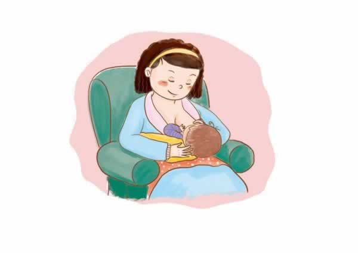
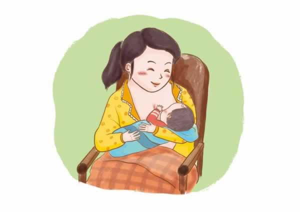
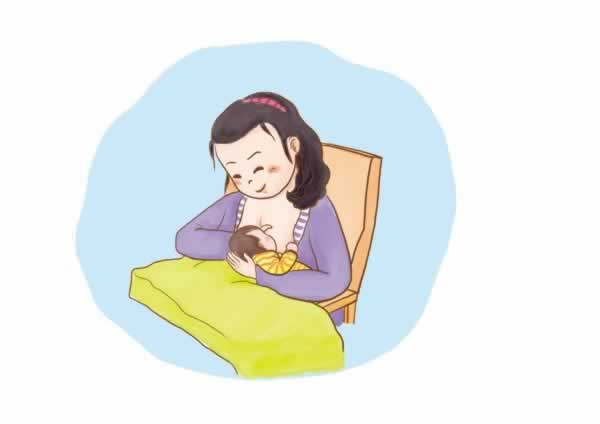
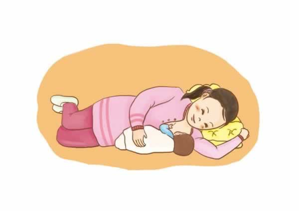

母乳喂养姿势
宝宝出生以后，你要和他通力合作完成的第一个任务就是喂奶与吃奶了。无论是母乳喂养还是人工喂养，需找到适合你和宝宝的喂奶姿势很重要。准妈妈不妨都提前了解下：
1. 将宝宝抱在怀里，在有扶手的椅子上坐直，用前臂和手掌托着孩子的身体和头部。喂右侧时用左手托，喂左侧时用右手托。让宝宝贴近你的乳房。

2. 与上一种相似，不过是喂右侧时用右手托，喂左侧时用左手托。

3.将宝宝抱在身体一侧，托住头，胳膊肘弯曲，手掌伸开，让他面对乳房，让宝宝的后背靠着你的前臂。你还可以在腿上放个垫子来调节高度。

4. 身体侧卧，让宝宝面对你的乳房，一只手揽住宝宝的身体，另一只手将奶头送到宝宝嘴里。
